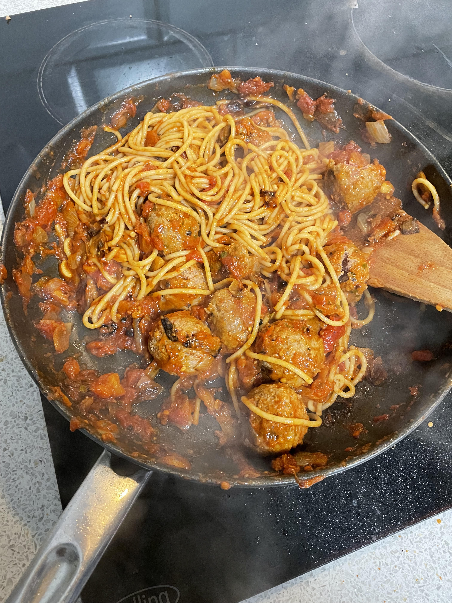

Spaghetti & Meatballs

Description
This simple recipe brings a lot of bang for your buck.
Ingridients List
- 6 beef meatballs
- 1 large onion
- 1 can of chopped tomatoes
- 1 serving of spaghetti
- 1 tablespoon paprika
- 1 teaspoon red pepper flakes
Steps
- Gather all ingredients.
- Dice onion.
- Heat olive oil in a skillet over medium heat; cook and stir onions in hot oil until
lightly sauteed, about 3 minutes.
- Add meatballs to the skillet. Leave cooking until piping hot throughout; no pink.
- Bring a pot of water to a rolling boil.
- Add spaghetti into boiling water with a pinch of salt and a dash of olive oil
- Wait until spaghetti is brough back to a boil - use fork to find al dente feel of pasta - roughly 6 minutes.
- Add your can of tomatoes to the skillet with onions & meatballs. Stir for 5 minutes until sauce thickens up.
- Drain pasta; lightly season with salt, black pepper, and a dash of olive oil. Then stir.
- Either mix sauce and pasta or serve sauce on top of pasta.
- And enjoy!
Home